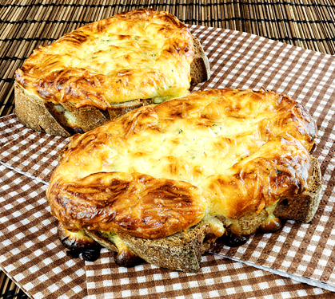

Tartine au fromage
Une tranche de pain grillé généreusement garnie de fromage fondant.
Ingrédients :
- Tranches de pain
- Fromage (chèvre, camembert, bleu…)
- Beurre
- Herbes (thym, romarin)
- Miel ou confiture (facultatif)
Préparation :
- Beurre légèrement les tranches de pain et dispose les morceaux de fromage dessus.
- Ajoute des herbes et un filet de miel si désiré.
- Fais gratiner au four jusqu’à ce que le fromage soit fondu et doré.
← Retour à l'accueil